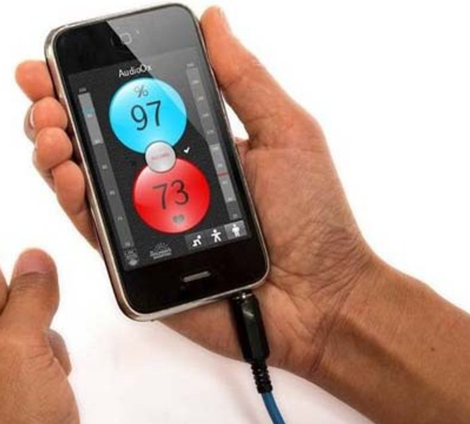

Experience
Opportunity to be a part of an innovative project that may lead to decreased heart disease rates. Some participants may be selected to learn coding for mobile app design.
Last updated 3 mins ago

Features
mHealth and IoT technologies will be used to identify any changes in heart health-related behaviors, including physical activity, sleep quality, food choices and mental/emotional health .
Last updated 3 mins ago

Innovations
We aim to reduce the risk of heart disease by empowering young adults to embrace behaviors that can improve hearth health through creative, digital health strategies (Mobile Health (mHealth) technologies).
Last updated 3 mins ago

Health Equity
Since cell phones are used equally among Americans, the cell phone-based health technologies are within equal reach of everyone. Mobile health projects like this one are important to the future of health care.
Last updated 3 mins ago
>
About Moyo Health App
CVRI launched the electrontic cohort in collaboration with Emory University and Georgia Tech, and the program is currently piloting now, with a goal for a full-fledged study in Spring 2017. The program has another unique element, which brings job training, work ethics, and other critical skills to young people ages 18-25 who have a high school diploma but no undergraduate degree. This pipeline program is being conducted in partnership with local organizations to recruit urban youth in Atlanta. The first five graduates are currently interning in this program, and after the conclusion will enter a 1-year internship working for the program to develop apps. The Iron Yard will provide students with the opportunity to explore new possibilities for securing their future."MOYO" Swahili for Heart.
The Moyo Health App will SOON be available for Download!
Really, why wouldn't you download this app?